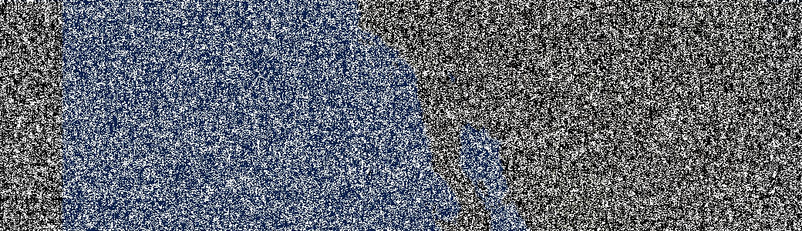
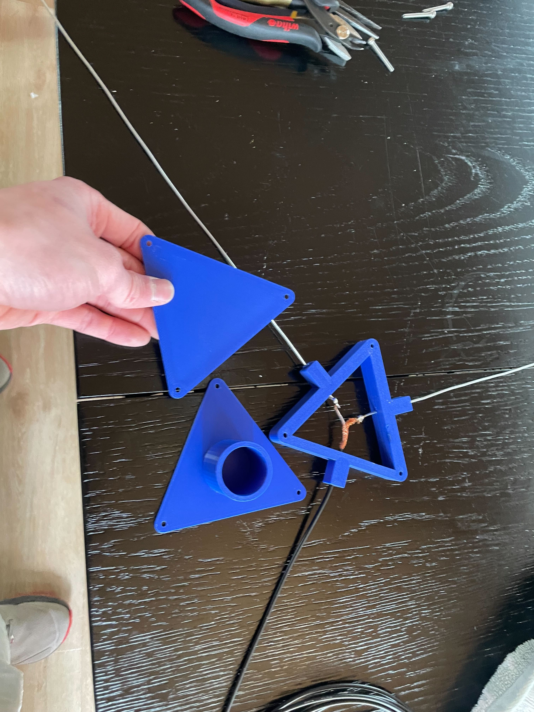
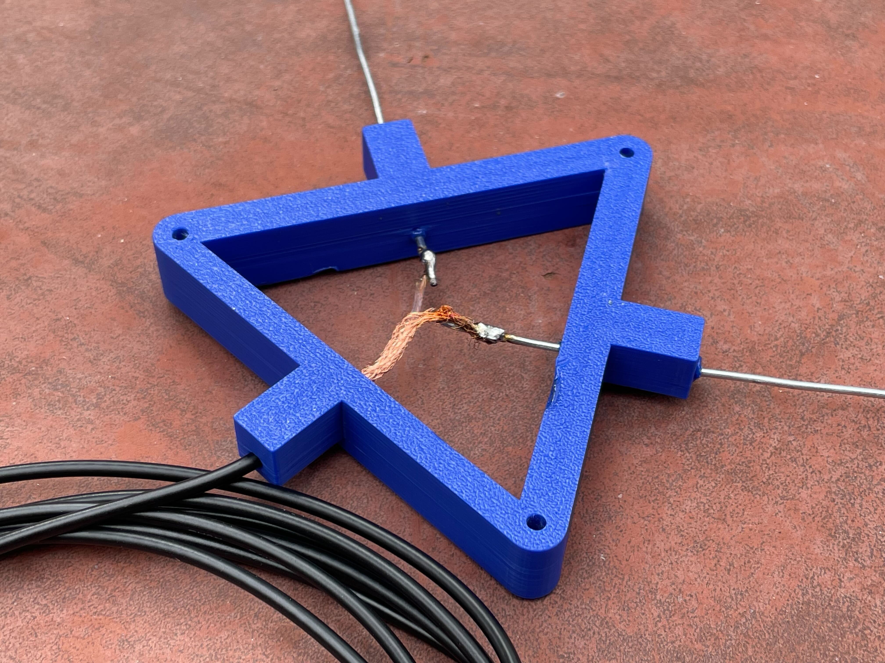
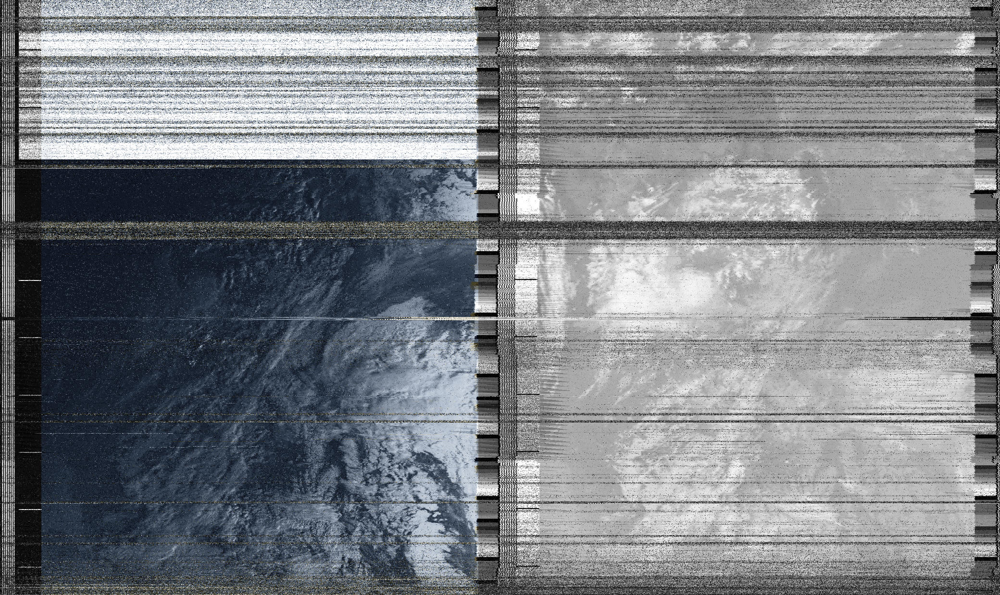

I ran into some videos online about NOAA satellite image transmission and I thought it could be cheap and easy to try to receive one of their transmissions. I purchased a NooElec SDR for cheap (https://www.nooelec.com/store/sdr/sdr-receivers/nesdr-smartee.html), a length of 50ohm coax, and I built my own antenna. The antenna is a simple dipole. Each length is 21 inches long (1/4 wavelength of 137MHz) and I made it out of 18 gauge wire from home depot which I straightened. I also 3d printed a holder, which positions the dipole and mounts it to the top of a pvc pipe. The dipoles are melted into the 3d printed then soldered to my coax. Here's some pictures I received two weeks ago from my work parking lot (noaa19). All decoding was done from online websites (https://open-weather.community/decode/)
Below are the images from that. I slowly improved over time, getting better at operating my software, timing my passes, and pointing the antenna.

First Attempt with my home built antenna. I 3d printed the case which mounts on top of a pvc pole. The antenna wires are 16 gauge galvanized steel from homedepot craft section. The wire is cut to length at 1/4 of the wavelength at 137mHz. They are soldered onto 50ohm impedence coax.
  And this one is my favorite! I knew it was going to be good from how clearly I could hear the downlink

Finally! I received a good pass during the day from NOAA19!
Return to main